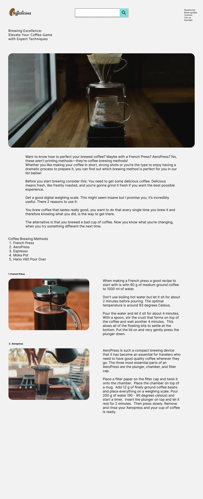
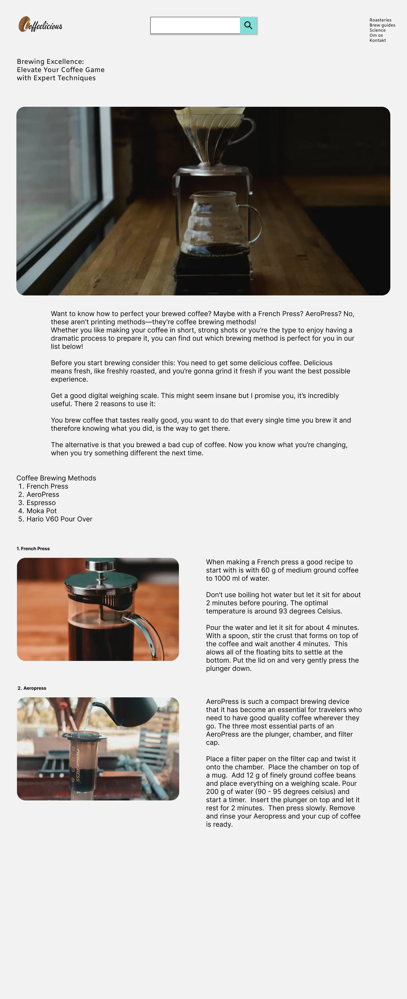

Tema 1 - Introuge
Denne uges formål er at introducere os for selve uddannelsen, vores undervisere og medstuderende samt de fysiske rammer.
Vi fik til opgave at oprette vores eget domæne, designe et præsentationskort i Figma samt som gruppe at lave en video med gruppens medlemmer, der tog udgangspunkt i en titelsekvens fra en kendt TV-serie. Vores gruppe valgte TV-serien "Shit happens" som model for vores produktion.
Vi brainstormede i gruppen over hvad vores fælles tema kunne være og endte på Caféen som et godt udgangspunkt.
Opgaver:
Programmer vi stifter bekendskab med:
Figma, FileZilla og Adobe Premiere Pro
Tema 2 - Grundlæggende Web
Så er vi for alvor igang. I dette tema bliver vi introduceret HTML og Visual Studio Code som bliver vores primære værktøj til at kode hjemmesider med. Vi lærer om responsivt design af hjemmesider samt Firefox og Chromes indbyggede developer tools til undersøgelse af websiders funktionalitet og vi bliver udstyret med de grundlæggende redskaber der skal skabe fundamentet for resten af vores uddannelse.
Opgaver:
Visitkort
I denne opgave skal jeg lave et visitkort som, i modsætning til det tidligere Præsentionskort, nu er opbygget i HTML. Formålet med opgaven er at vise at vi kan arbejde med HTML, benytte beskivende attributer på billeder, validere koden samt uploade via FileZilla til vores eget nyoprettede domæne.
Sæt indhold i HTML
Her arbejder jeg med mappestruktur, wireframes og layoutdigrammer. Jeg har til opgave at kode et mobilt website der viser at jeg kan lægge det forudbestemte indhold ind i forhold til de udleverede layoutdiagrammer og wireframes.
Mobilsite
Her bliver opgaven udvidet med introduktion af CSS. Indholdet er det samme som ovenstående men nu har jeg udvidet det med CSS. Det vil sige at jeg har har indtroduceret fonte, farver samt margins og padding
Website
Med denne opgave bliver det ovenstående domæne udvidet til også at fungere på desktop. Her er der stadig fokus på at det skal følge de forudbestemte wireframes og layoutdiagrammer. Samtidig introduceres flexbox, gridlayout og udvidet CSS der nu deles op i generel.css og layout.css.
Kæledyrsøvelse
I denne sidste opgave i Tema 2 skal jeg lave en enkelt HTML side der skal handle om et kæledyr. Opgaven fokuserer på at jeg benytter den viden jeg har fået om flexbox og gridlayout samt brugen af eksterne links.
Programmer vi stifter bekendskab med:
Visual Studio Code
Tema 3 - Grundlæggende UX-UI
Dette tema handler om research, idéudvikling, design og en række forskellige test der alle skal medvirke til at forstå og forbedre brugergrænsefladen. Temaet har en hovedopgave der går ud på at lave en hjemmeside om et emne jeg selv vælger. Desuden bliver jeg introduceret i hvorledes jeg bedst præsenterer det endelige resultat.
Opgaver:
Research og idé
Som mit emne for hjemmeside valgte jeg at lave en side for kaffe entusiaster. Via min research fandt jeg at der manglede et site der både havde en oversigt over gode risterier samt tips og råd til forskellige bryggemetoder. Jeg søgte indsigter og inspiration via interviews af kafferistere og baristaer blandt de københavnske risterier og caféer.
Den næste del af processen var at udarbejde et moodboard der førte videre til en styletile som kondenserede design elementerne.

Ved hjælp af Crazy 8 blev en række mulige wireframes afprøvet og det førte videre til layoutdiagram og den digitale prototype.
Digital prototype
 

Næste del af processen involverede Hand-off til at komme igang med at kode selve sitet. Desuden blev det til endnu en tur rundt til de Københavnske risterier, for at tage egne billeder der kunne erstatte de stock billeder jeg havde brugt i prototypen.
Kodet site
Tema 4 - Animation
Her bliver jeg introduceret til javascript. Sammen med CSS animationer skal jeg lave et spil helt fra grunden, med egne baggrunde og figurelementer. Der er stadig fokus på planlægning, design og udvikling af digitale brugergrænseflader.
Første opgave at finde på en idé til selve spillet. Eftersom det er efterår og jeg har 2 drenge der skal ud og samle slik, bliver det inspiration for mit spil: Et halloween spil hvor målet er at samle så meget slik og chokolade som muligt, samt undgå at samle nogle af de grøntsager som også dukker op.
Dernæst skal min papirprototype omsættes til et aktivitetsdiagram, hvor vi benytter UML-standarden. Aktivitetsdiagram fører videre til et State Machine Diagram der bedre repræsenterer de forskellige tilstande, overgange og begivenheder i spillet.
Programmer vi stifter bekendskab med:
Draw_IO, Adobe Illustrator og Adobe Audition
Tema 5 - Indhold
Dette tema fokuserer på produktion af indhold og specielt videoproduktion. Temaets hovedopgave er en gruppe-opgave der skal lave et redesign af en virksomheds hjemmeside og hvor de færdigheder vi har tillært os i de tidligere temaer benyttes.
Vi introduceres endvidere til GitHub således at vi som gruppe kan arbejde sammen om kodningen af virksomheds-sitet.
Videosite
Første opgave er et videosite, der primært er en øvelse i videoproduktion.
I præproduktionen udarbejder vi et storyboard og skudliste, der forbereder os til selve produktionen. Vi laver desuden en liste over de spørgsmål vi har tænkt os at stille til vores hovedperson.
I postproduktionen klipper jeg videoen, laver lydefterarbejde i Audition og tilføjer, ved hjælp af en AI musikgenerator, rettighedsfrit musik. Dernæst farvekorrigerer jeg og lægger til sidst en colourgrade på den samlede film.
Virksomhedssite
Opgaven med at redesigne en virksomheds hjemmeside opsumerer rigtig meget af den lære vi har modtaget i de foregående temaer. Vi researcher virksomhedens nuværende website med wireframes, layoutdiagrammer, moodboards og styletiles
Dernæst researcher vi virksomhedens forretningskoncept med hensyn til afsender, målgruppe, produkter og Unique Selling Propositions.
I idéudviklingen benytter vi Crazy 8 til udvikling af Sitemap, wireframes og prototype til den redesignede hjemmeside samt moodboard og styletiles.
Den næste fase er test af både eksisterende og redesignede hjemmeside. Vi benytter 5-sekunders test, Tænke-højt test, BERT test, Heuristisk test samt Lighthouse test.
Det hele samles i et procesdokument.